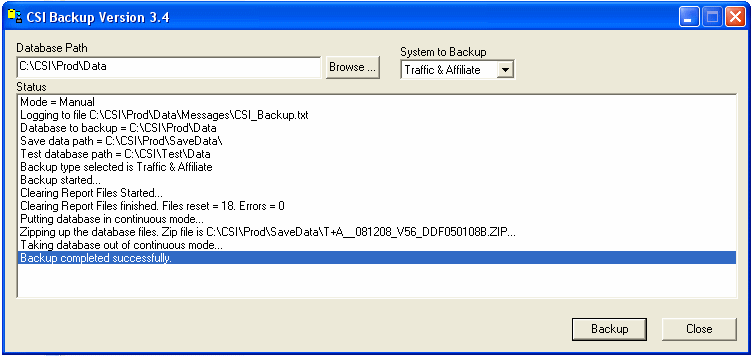
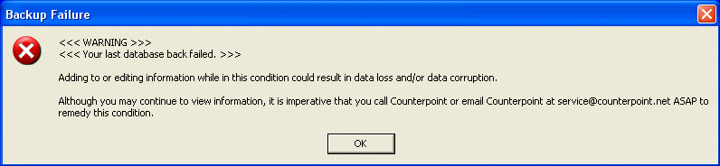
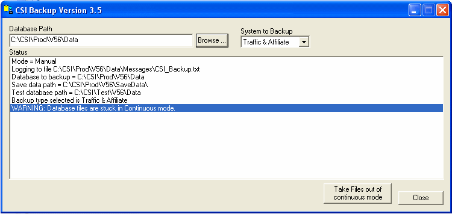
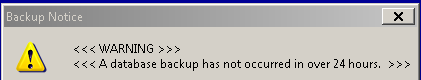

Database Backup
The importance of backup systems can be easily understood because computers are electronic items, and they can be prone to failure. The most threatening kind of failure is data loss or corruption of data. Once you lose or corrupt your data, you have no other option than restoring it from the backup taken before data corruption or deletion. Ignoring the importance of system backups may cause permanent loss of important data.
No matter how sound technology your computer has, no one can guarantee that it will never fail. You should take regular backups of your important data files and copy them to a safe location.
A Counterpoint backup automatically:
- Determines what data to backup
- Selects the files and folders with your data
- Allows you to set a backup schedule
- Runs entirely at the server
- Confirms your backup
The benefit of the Counterpoint backup is that your data is stored in a convenient zip file format. This format can be used for any emergency restore purposes or by Counterpoint support to analyze data issues.
The backup service is the CSI_Server program and is a windows service. Windows service programs run 24/7 and will automatically be re-started if the server is re-booted. It is responsible for starting automatic backups and is also the communications gateway between the Counterpoint Applications and the backup process. It uses the settings defined in CSI_Server.ini to determine where items are located.
Configuration Path Settings
The CSI_Server.ini contains database path and other settings to specify where certain folders are located. Browse to the folder X:\CSI\Prod\Exe and open the CSI_Server.ini file.
Note: The drive letter X being shown in these examples will be replaced with your actual drive letter. This drive letter should not be a mapped drive letter and should be the drive letter which is local to the server itself.
Database = X:\CSI\Prod\Data
TestDatabase = X:\CSI\Test\Data
SaveData = X:\CSI\prod\SaveData
ZeroBtr = X:\CSI\prod\zero_btr
LogFile = X:\CSI\prod\Data\Messages\CSI_Server_Log.txt
Change these settings to properly match with your server. For instance, if the Counterpoint Applications are installed on drive C: in the CSI\Prod\Exe folder then the settings would be set as follows:
Database = C:\CSI\Prod\Data
TestDatabase = C:\CSI\Test\Data
SaveData = C:\CSI\prod\SaveData
ZeroBtr = C:\CSI\prod\zero_btr
LogFile = C:\CSI\prod\Data\Messages\CSI_Server_Log.txt
Enabling Automatic Backups
Backups can be configured to run at a specific time each day. The CSI_Server.ini file contains the settings that determine when the backup is to run.
To change these settings, browse to the X:\CSI\Prod\Exe folder and open the CSI_Server.ini file. Scroll down in the file and locate the section [Backup]. Below is an example section. Based on these settings the backup will run at 2:00 am every day except on Saturday and Sunday.
[Backup]
Enabled = 1
WeekDays =1111100
Interval = 86400
StartTime = 2:00am
MonthDaysToRun =
WeekNumber =
TimeSlot =
Exe = X:\CSI\Prod\\Exe\CSI_Backup.exe
StartInFolder =
CommandLine = C:\CSI\Prod\Data, auto
KeepProgramRunning = 0
Installing and Starting Backup Services
To start the backup service, browse to the folder X:\CSI\Prod\Exe\CSI_Server_MNGR.exe, and double click on the program CSI_Server_Mngr.exe.
Click “Install;”, then “Start”.
The green light will show stating that the service is now running.
You can now close this screen.
Running a Backup on the Server
Running the CSI_Backup program directly can only be done on the server. All client PC’s need to run backups from within the Counterpoint applications only.
Creating the Shortcut
First create a shortcut for CSI_Backup. Locate CSI_Backup.exe in the X:\CSI\Prod\Exe folder. A new shortcut will be created in the same folder called “Shortcut to CSI_Backup.exe”. Right click on this shortcut and select “Properties” from the popup menu. Change the “Start in” parameter to the data folder to backup.
Next, click on the “General” tab and change the name to something that identifies the database to be backed up.
When finished, click on “OK”.
Running the Backup
You are now ready to run the backup. Double click on the shortcut icon just created. The main screen shows the database path to backup. The status window shows we are running in manual mode and also shows other information loaded from the INI file.
The “Browse” button can be used to locate a different database to backup. Select “System to Backup”. Automatic backups always backup both Traffic and Affiliate.
Press “Backup” to start the process.
Do not close the backup window while backup is running.
Each step being performed during the backup process is shown in the status window.

When the backup is completed, you will see the message, “Backup completed successfully”. The backup window can then be closed.
Backup Verification
Backup verification can be done from within the Traffic or Affiliate system by viewing the information in the Accessories->Messages Viewer.
Any user that has access to “Site Options” can verify the last backup and change the days and time that the backup runs.
They will need to contact Counterpoint Support for the Site Options password, and then select the Site Options->Bkup tab.
Once the “Using CSI Backup” option has been checked, any day and time changes that are made here are automatically updated to the CSI_Server.ini.
Using CSI Backup and Days to run: Indicate that you are using the Counterpoint Backup program, select the days on which you wish to run your backup, and enter a time to run the backup that will not interfere with any other programs running on your server. The file name will appear in the yellow field automatically once you run a backup. The naming structure is T+A (Traffic and Affiliate), the database name as defined in “Client Name Abbreviation” (Site Options->General), the month/date/year, the database version, and the DDF file dates The File Location, Date, and Time of the last backup will automatically update. The backup is saved in the CSI\Prod\SaveData folder. The file size of the last backup will automatically update
Running the Backup From the Traffic System
Select “Task”, “Backup”, “Complete System Backup”.
Running the Backup From the Affiliate System
Select “File”, “Backup”, “Complete System Backup”.
The backup screen will display showing when the last backup was performed along with the current backup state.
Press “Start” to begin and you will see the current backup status as the backup progresses. You can close the Counterpoint Backup Screen and continue working within Counterpoint as the backup progresses.
If a manual or automatic backup is currently in progress, the “Current backup state” will say that a backup is currently in progress and will disable the “Start” button to prevent two backups from running at the same time.
Backup Failure Notifications
If any errors occur during the backup process, you will receive an error message.

Access the server where backups are running and browse to the X:\CSI\Prod\Exe folder. Double click on the CSI_Backup shortcut program to attempt a manual backup.
CSI_Backup will detect this condition and the error message will be shown in the status window. “WARNING: Database files are stuck in Continuous mode.”

- Click “Take Files out of Continuous Mode” to resolve the issue.
- You will be prompted whether to open each file or not. Select “Yes”. Select “Yes” tells CSI_Backup to open and hold each file open until PSQL has rolled the delta files back in to the main table.
- If CSI_Backup is still unable to resolve the issue, ensure all users are logged off the server and re-boot it. After the server has restarted, run CSI_Backup again and click the button “Take Files out of continuous mode”.
Backup Troubleshooting Tips
Verify CSI_Server is running
Refer to “Starting the backup service” and verify the traffic light is green.
Verify Port 5305 is Open
The Windows Firewall on certain machines block ports over 5000. Port 5305 must be opened to run the Counterpoint Backup and to prevent a lag in sign on time. Select Counterpoint on the Exceptions tab, or manually open port 5305 in Windows Firewall to allow Counterpoint to communicate using Port 5305.
Verify CSI_Server is logging messages
CSI_Server will detect when its ini file is changed within 15 seconds. A good test to verify if CSI_Server is running ok is to open the CSI_Server.ini file and save it and then verify that CSI_Server properly detected this. Do the following actions to perform this check.
Open the file X:\CSI\Prod\Exe\CSI_Server.ini file and from the main menu select “File”, “Save”, then select “File”, “Exit”. Wait at least 15 seconds and then browse to the X:\csi\prod\data\messages folder and verify that the CSI_Server_Log.txt files date and time is set to approximately the current time when the save was performed. You can also open the CSI_Server_Log.txt file and verify that the following statement was recently written to it, “CSI_Server.ini settings are being reloaded”. This statement will be followed by all sections defined as well.
If this test did not work it may be due to a previous version of the CSI_Server being stuck. Perform the steps outlined in the next section called “How to remove a previous stuck version of CSI_Server”
Un-installing a previous version of Backup Services
If a previous version of the backup gets stuck in Continuous Mode, you may have to uninstall the version.
To remove an already running backup service, browse to the folder X:\CSI\Prod\Exe\ and double click on the program CSI_Server_Mngr.exe.
Click “Stop”, then “Remove”. The yellow light shows stating that the service is now stopped and un-installed.
You must now restart the PC.
Once the PC has restarted, Start the Backup Services by clicking “Install”, then “Start”.
The green light will show stating that the service is now running.
You can now close this screen.
Backup Has Not Occurred Warning Message
Occasionally, this message will appear to Traffic and/or Affiliate users:

The CSI_Server.ini database path specifies where the database is located that should be backed up. The database cannot be on a mapped drive and must be on the same machine on which PSQL is installed.
- Check Site Options -> Backups, to determine the date of the last backup
- Look in the SaveData location and verify the date of the last backup
- The save location for the backup file is specified on the SaveData path on the csi_server.ini file
- The save data folder can be on a mapped drive
- DZIPLOG.TXT lists the files that were backed up as well as any files that were skipped
- DZIPLOG.TXT and can be found in the users system directory, most likely C:\Winnt
- Stop/Start CSI Server Manager, and see if this resolves the warning message